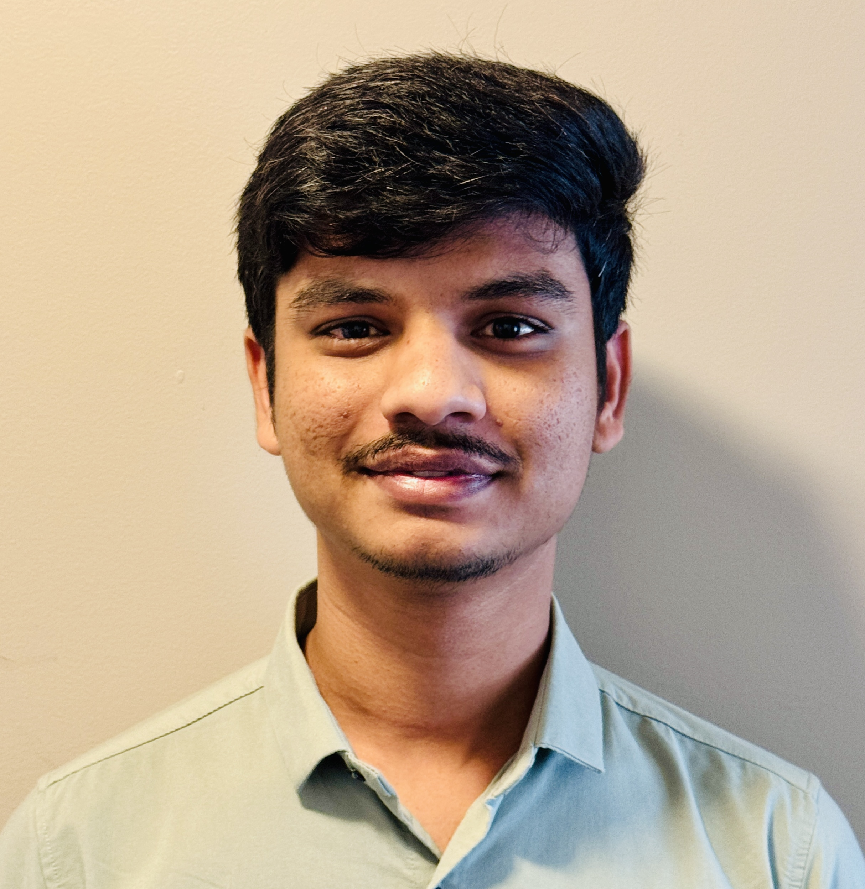

Chandrakanth Etikala

Summary
As an aspiring Java Full Stack Developer, I
specialize in front-end development while
gaining exposure to back-end
technologies. I am dedicated to designing
and developing web applications using the
latest Java technologies to ensure the
delivery of high-quality code and
innovative products.
Career Objective
Aspiring to enhance my skill set through
external training, I aim to contribute to all
key performance indicators in Java Full
Stack Development. Seeking to apply
organizational skills to introduce efficient solutions for executives at your organization,
promoting time-saving and ensuring the
initiatives and driving project success.
Education
-
MS - Information Systems Technology
Wilmington University Aug 2022 -Dec 2023.
-
B.Tech (ME) - Mechanical Engineering
SICET Jul 2017 -Jul 2021.
Work Experience
-
Full Stack Developer - WILMU INC.
July 2023 - Dec 2023
-
Expert in Java development, adept at building and maintaining high-
performance systems with Java, J2EE, and Spring. Proficient in
troubleshooting Java applications, with strong skills in XML and
HTML. Conducted in-depth research and analysis to enhance system
efficiency and document technical processes. Designed comprehensive
test strategies using JUnit, Mockito, and Selenium, ensuring optimal
code quality. Collaborated with Business Analysts to translate
requirements into scalable software solutions in Agile settings.
-
Specialized in OOAD with UML, developing maintainable code structures
for Java-based ecosystems. Proficient with Eclipse IDE, enhancing
development productivity through effective use of plugins and debug
techniques. Experienced in SOAP and REST services, particularly with
Apache CXF, for seamless system integration. Skilled in Spring and
Hibernate for robust backend development, with a focus on Hibernate
and JPA for data layer management. Provided essential production
support, diagnosing and resolving defects to maintain system reliability.
-
AutoCAD Developer (Junior) - ACCENT ENGINEERS.
July 2021 - Feb 2022
-
Collaborating with architects, designers, and engineers to brainstorm
and discuss design concepts and creating comprehensive product
designs from initial concepts.
Submitting preliminary design drafts for client review and
approval. Ensuring adherence to safety and structural standards in
product designs.
-
Producing detailed Solid and Surface CAD models using AutoCAD
software. Integrating technical precision and aesthetic considerations
into the development of final designs.
Offering diverse design perspectives for construction enhancements and
adaptations and finalizing AutoCAD models with attention to detail.
Presenting models effectively to clients for feedback and approval.
Technical Expertise
-
Java: ⭐⭐⭐⭐
-
JavaScript: ⭐⭐⭐
-
Node: ⭐⭐
-
React: ⭐⭐⭐
Skills/Exposure & Tools
-
AWS, GCP, Springboot, SQL, CI/CD, Jenkins, Docker, jQuery, Redux, MongoDb.
-
Git, VS Code, Jira, Webpack, Eclipse, Bitbucket.
Methodology/Approach
-
Agile methodology, Design Patterns, Test Driven Development, Scrum.
Key Projects/Involvements
-
Achieved cost savings and enhanced response times through efficient 3D model
file size reduction using Draco compression before storage in S3, and optimized
request serving through gzip compression.
-
Demonstrated full ownership of both Frontend and Backend aspects while
providing mentorship to project teammates during the on-premises project's cloud
migration.
-
Led a pivotal multi-terrain suspension project ensuring continuous ground contact
for all wheels and designing an independent climbing mechanism. Successfully
implemented the stable Rocker Bogie mechanism aligned with NASA's preferences,
enhancing space vehicle and rover performance during my bachelor's.
Certificates and Awards
-
JavaScript & Node- The Complete 2024 Web Development Bootcamp from Udemy.
-
The Complete SQL Bootcamp Certificate from Udemy.
-
A paper titled "Analysis of Rocker Bogie Suspension System" is published in (JETIR)
Journal of Emerging Technologies and Innovative Research. Volume-8, Issue-9.
Journal Link
Others